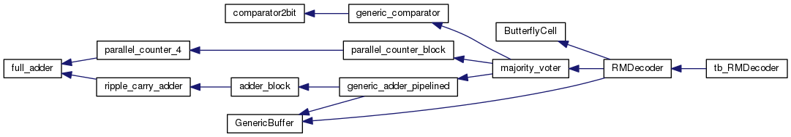
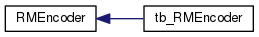

Reed-Muller Decoder/Encoder in VHDL
Pagina Principale
Pagine collegate
Moduli
Design Unit List
File
Design Unit List
Design Units
Design Unit Hierarchy
Design Unit Members
Tutto
Classi
File
Variabili
Gruppi
Pagine
Design Unit Hierarchy
Vai alla gerarchia delle classi (testuale)


Generato Mer 17 Mag 2017 00:07:35 per Reed-Muller Decoder/Encoder in VHDL da
1.8.8
 1.8.8
1.8.8